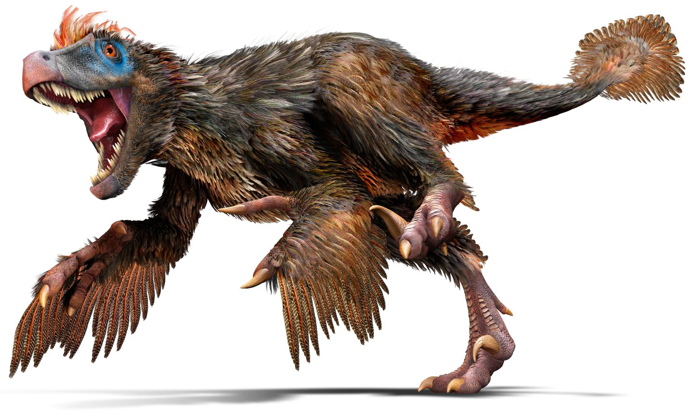
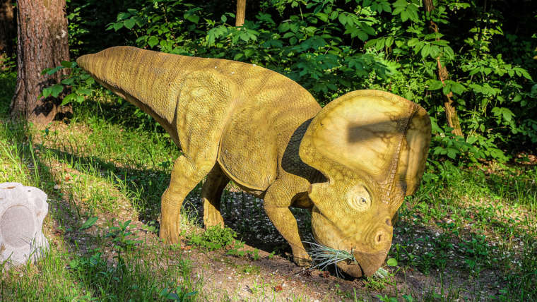
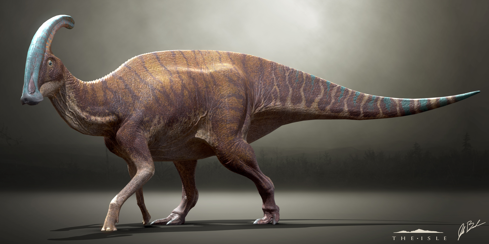

Los dinosaurios mas conocidos
Para iniciar debes saber que existen aproximadamente 700 especies diferentes de dinosaurios, pero algunos son más conocidos ya sea por diversos medios de entretenimiento como películas, videojuegos o libros así que en este apartado no veremos todas las especies como tal, pero veremos los dinosaurios más famosos y reconocidos por el medio popular y también uno que otro dato.
Aunque para aclarar los mosasaurios, ictiosaurios, pterosaurios, plesiosaurios y Dimetrodon son comúnmente considerados dinosaurios, técnicamente no son dinosaurios. El término "dinosaurio" se refiere solo a los reptiles que habitan la tierra que tienen una estructura específica de cadera, entre otros rasgos así que no estarán en esta lista .

dinosaurios mas conocidos
Tyrannosaurus rex, cuyo nombre significa Reptil Tirano, vivió durante el periodo Cretácico tardío. Medía de 10 a 14 metros de longitud y pesaba entre cuatro y siete toneladas (su cráneo medía apenas 1,5 metros de largo). Era uno de los carnívoros más feroces y también de los más temidos. A pesar de su tamaño, muchos paleontólogos creen que podría correr eficientemente detrás de una presa y, ciertamente, superar a un humano. T. rex vivió en un área de la Tierra que ahora constituye el oeste de América del Norte hace unos 66 millones de años.
Triceratops (Triceratops horridus), cuyo nombre significa Horrible Cabeza con Tres Cuernos, vivió durante el periodo Cretácico tardío hace 66-68 millones de años. Los especímenes adultos podían medir entre 8 y 9 metros de largo y 3 metros de alto, con una masa corporal de entre 6.000-12.000 kilos. Con su colosal tamaño, este dinosaurio se alimentaba de plantas duras y ricas en fibra. Fue el mayor de los dinosaurios cornudos de esta etapa. Los primeros fósiles conocidos de un Triceratops se encontraron cerca de Denver, Colorado en 1887.
Velociraptor (Velociraptor mongoliensis), cuyo nombre significa "ladrón rápido o veloz", era de tamaño pequeño (aproximadamente 1,8 metros de longitud y apenas 15 kilogramos), más inteligente que la mayoría de los dinosaurios y un corredor rápido gracias a sus dos patas traseras. De hecho, podía alcanzar hasta 65 kilómetros por hora, lo que le venía de perlas para cazar presas, pues era carnívoro (su presa favorita pudo ser protoceratops). Vivió durante el periodo Cretácico tardío y cazaba en grupo.
Diplodocus (Diplodocus longus) cuyo nombre significa "doble haz", hace referencia a los huesos de forma extraña que se encuentran en la cola del Diplodocus (que contenía alrededor de 80 vértebras). El extremo de su cola era tan delgado que le permitía usarla como un látigo para defenderse de los depredadores. Este dinosaurio vivió en un área que ahora es el oeste de América del Norte al final del período Jurásico, hace unos 150 millones de años. Parece que podía medir hasta 35 metros y pesar alrededor de 10 a 15 toneladas de peso. Vivió durante el periodo Jurásico tardío. Se trataba de un dinosaurio herbívoro que se alimentaba de hojas y frutos de árboles altos y arbustos, así como helechos y equisetos que crecían a nivel del suelo.
Braquiosaurio (Brachiosaurus Brancai), cuyo nombre significa Reptil con Brazos, vivió en el periodo Jurásico tardío en lo que actualmente es América del Norte. Este herbívoro estaba adaptado para alimentarse de árboles altos. Se estima que ingería unos 200-400 kilos de comida al día. Tenía un cuello largo, una cabeza pequeña y una cola relativamente corta. Medía hasta 28 metros de alto y pesaba aproximadamente 50 toneladas. Era el único dinosaurio que tenía las patas delanteras más largas que las traseras. Es un saurópodo, como el Diplodocus y el Apatosaurus.
Nadie sabe por qué el estegosaurio (que se traduce como "lagarto cubierto") tenía placas tan distintivas que en promedio medían 60 centímetros de alto y de ancho. De promedio, medía alrededor de 9 metros de largo y 4 metros de alto y pesaba dos toneladas como máximo. Algunos creen que las placas puntiagudas de este dinosaurio podrían haber sido de colores brillantes y podrían moverse, y las puntas en la cola podrían haber sido horizontales en lugar de verticales, lo que ayudaría a alejar a los depredadores. El estegosaurio vivió en las llanuras de lo que es ahora Norteamérica hace unos 150 millones de años. Era un dinosaurio herbívoro de finales del período Jurásico.
Iguanodonte (Iguanodon Bernissartensis), cuyo nombre significa “diente de iguana, vivió a principios del Cretácico hace unos 125 millones de años. Fue descubierto por primera vez en 1822 por el geólogo inglés Gideon Mantell y fue el segundo dinosaurio en recibir un nombre formal (en 1825), el primero fue Megalosaurus (en 1824). Se trataba de un dinosaurio herbívoro que pesaba alrededor de 3,5 toneladas y alcanzaba unos 10 metros de longitud. Junto con Tyrannosaurus rex y Estegosaurus, el iguanodonte fue uno de los tres dinosaurios que inspiraron la aparición de Godzilla.

Arqueópterix ( Archaeopterix Lithographica) cuyo nombre significa “ala antigua”, vivió en el periodo Jurásico. Se trata de una ave primitiva carnívora que contaba con unas garras de aspecto aterrador y dientes afilados. Respecto a su dieta, probablemente incluía pequeños reptiles, mamíferos e insectos. Medía aproximadamente 60 centímetros y pesaba 500 gramos. Sus características fisiológicas lo colocan como una especie de transición evolutiva entre los dinosaurios y las aves.
Protoceratops, cuyo nombre significa “primera cara con cuernos”, vivió en el periodo Cretácico tardío hace aproximadamente 75 y 71 millones de años en lo que actualmente es Asia (sobre todo en Mongolia). Se alimentaba de plantas y medía aproximadamente dos metros de altura y pesaba hasta 177 kilos. ¿Realmente tenía cuernos? No. Este herbívoro del Campaniense no portaba auténticos cuernos, sino botones óseos sobre la punta de la nariz y las mejillas.
Alosaurio (Allosaurus Fragilis), cuyo nombre significa “delicado reptil extraño/diferente”, era un dinosaurio carnívoro más pequeño que Tyrannosaurus rex pero más rápido y con una mandíbula repleta de dientes. Tenía un cráneo grande y caminaba sobre dos patas. Pero, al contrario de su primo, su cuerpo y cabeza estaban bastante equilibrados por una cola larga y pesada. Otro de sus rasgos característicos es la serie de protuberancias delante de cada ojo, aunque se desconoce su función. Vivió durante el periodo Jurásico tardío, hace unos 150 millones de años. Fue descrito por primera vez por Othniel Marsh en 1877 y se convirtió en uno de los primeros dinosaurios conocidos. Marsh también nombró y dio la primera descripción del Apatosaurus (Brontosaurus) en ese mismo año. Alosaurio medía aproximadamente 12 metros de largo y pesaba hasta dos toneladas. Se alimentaba de pequeños dinosaurios como el Camptosaurio y el Estegosaurio, además de lagartos y mamíferos. Es posible que cazara en manadas. Se trata de un dinosaurio muy popular, presente en libros, documentales y películas, incluido el libro de 1912 de Arthur Conan Doyle "El mundo perdido" y la serie de televisión de la BBC llamada "Caminando entre dinosaurios" (1999).
Gallimimo (Gallimimus Bullatus), cuyo nombre significa “reptil gallina”, es la única especie conocida del género Gallimimos. Vivió durante el periodo Cretácico tardío hace aproximadamente 70 millones de años en lo que actualmente es Asia. Medía cuatro metros y pesaba un poco más de cuatro toneladas. Era omnívoro y se alimentaba de pequeños animales, insectos, huevos y plantas. Se trataba de un dinosaurio bastante ágil que caminaba a dos patas, que eran bastante delgadas. Es probable que corriera tanto como el avestruz actual (unos 70 km/h).
Anquilosaurio (Ankylosaurus), cuyo nombre significa “reptil tieso”, vivió al final del periodo Cretácico hace aproximadamente unos 66 millones de años. Sin duda fueron de los últimos dinosaurios que quedaron antes del gran evento de extinción a causa del impacto de un meteorito. Anquilosaurio era herbívoro y se alimentaba de plantas bajas. Sus dientes eran muy pequeños en comparación con el tamaño de su cuerpo, pues medía hasta 11 metros de largo y pesaba unas 4-6 toneladas. Lo más característico de este dinosaurio es su armadura corporal: espinas y placas de hueso incrustadas en la piel que representaban una defensa estupenda contra los depredadores. Su cola tampoco es desdeñable, pues era capaz de romper los huesos de otro dinosaurio con su embestida.
Mamenquisaurio (Mamenchisaurus Hochuanensis), cuyo nombre significa Lagarto de Hochuan y Mamenchi, vivió durante el periodo Jurásico tardío hace aproximadamente entre 163 a 145 millones de años, en lo que actualmente es Asia. Se trataba de una criatura herbívora que se alimentaba del follaje de los árboles. Este saurópodo de cuello largo podía medir unos 25 metros de largo y pesar 27 toneladas. Es como el primo chino del Diplodocus y, sin duda, fueron los animales terrestres más grandes que hayan existido jamás sobre la faz de la Tierra.
Parasaurolofus (Parasaurolophus Walkeri), cuyo nombre significa 'Semejante al Reptil con Cresta', vivió en el periodo Cretácico tardío hace unos 75 millones de años, en lo que ahora es América del Norte. Medía 9 metros de largo y pesaba 2 toneladas. Fue descrito por primera vez por William Parks en 1922, dos años después de que se descubriera un esqueleto parcial y un cráneo en Alberta, Canadá. Lo más característico de este herbívoro es su cresta. El animal proviene de una familia de dinosaurios llamados Hadrosauridae, conocidos por tener cráneos de formas extrañas. En este caso, posee una cresta en su cabeza que se forma como una tubería larga y curva que apunta hacia atrás desde el cráneo. ¿Cuál sería su función? Existen varias teorías, pero muchos científicos están de acuerdo en que es posible que ayudar a identificar a hembras y machos y aumentase su capacidad auditiva (podrían haber emitido sonidos parecidos a los de un trombón para comunicarse).
Apatosaurio (Apatosaurus Ajax), cuyo nombre significa 'Lagarto Engañoso', vivió durante el período Jurásico tardío hace unos 150 millones de años. Es uno de los saurópodos con más restos descubiertos del período Jurásico tardío. Su tamaño hace que sea uno de los favoritos de muchos museos. Su aspecto en la edad adulta era maravilloso, ya que probablemente crecieron hasta unos 23 metros de largo y pesaron unas 35 toneladas. Su cuello se alzaba sobre un cuerpo ancho, que le ayudaba a pastar en el follaje alto (no en vano, es un dinosaurio herbívoro que se alimentaba de plantas), aunque el propósito de su cola con forma de látigo es una incógnita. También conocido como Brontosaurus (debido a una confusión al descubrir sus restos en 1877 por Othniel Charles Marsh quien pensó que había descubierto una nueva especie cuando en realidad era la misma). Lo curioso es que el nombre de Brontosaurio se hizo más popular que el anterior (sobre todo por la serie Los Picapiedra).
Es otro de esos dinosaurios que se hicieron famosos gracias a las películas, concretamente “Parque Jurásico”. Sin embargo, las licencias creativas de Hollywood han llevado a una malinterpretación de este dinosaurio. Dilofosaurio no escupía veneno; ni tenía una especie de volante en el cuello. Tampoco era del tamaño de un labrador retriever. Dilofosaurus (Dilophosaurus wetherilli), cuyo nombre significa "lagarto de doble cresta" por su elegante decoración de la cabeza, medía aproximadamente 7 metros de largo desde la cabeza hasta la cola y pesaba alrededor de 400 kilos. Y con una boca llena de dientes afilados, se cree que fueron carroñeros, lo que complementaban con la caza de animales pequeños y peces. Vivió a principios del periodo Jurásico, hace aproximadamente 200 y 190 millones de años.
Carnotaurus (lat. "toro carnívoro de Anselmo Sastre"), o carnotauro en castellano, es la única especie conocida del género extinto Carnotaurus de dinosaurio terópodo de la familia Abelisauridae. Vivió en el Cretácico superior, hace aproximadamente entre 72 y 69,9 millones de años, durante el Maastrichtiense, en lo que hoy es Sudamérica.Lo más notable de este dinosaurio son sus dos pequeños cuernos sobre los ojos en su pequeña cabeza, siendo el primer carnívoro que mostrara cuernos bien formados y definidos. También se hallaron impresiones de la piel que presentaban pequeños osteodermos, escudos óseos. Carnotaurus es un miembro avanzado de la familia Abelisauridae, un grupo de grandes terópodos que ocuparon el nicho de gran depredador en las masas de tierra que conformaron Gondwana durante finales del Cretácico, ocupando el lugar de los tiranosáuridos luego de la desaparición de los carcaradontosáuridos y los neovenatóridos.
El espinosaurio es una especie de dinosaurio, clasificado como terópodo espinosáurido, que vivió en el período cretácico inferior y superior, aproximadamente hace unos 65-95 millones de años, en el Albiano y el Cenomaniano, en lo que hoy es África del Norte. El significado de su nombre es Reptil Espinoso de Egipto o Lagarto con Espinas. Restos de esta especie fueron hallados en Egipto en el año 1912, y mencionados por el paleontólogo germano Ernst Stromer en 1915. Dos variedades de espinosaurio se han descrito, el Spinosaurus aegyptiacus de Egipto y el Spinosaurus marocannus de Marruecos.
Giganotosaurus ([gigas] 'gigante', νότος [notos])es la única especie conocida del género extinto Giganotosaurus de dinosaurio terópodo carcarodontosáurido, que vivió a mediados del periodo Cretácico hace aproximadamente entre 99,6 y 96 millones de años, en el Cenomaniense, en lo que hoy es Sudamérica. Es uno de los mayores terópodos conocidos; se cree que alcanzaba longitudes de entre 12,3 y 13,2 metros, con un cráneo de posiblemente de más de 1,60 metros de largo y un peso aproximado de entre 7 y 8 toneladas. Este género ha interesado mucho a la comunidad científica y popular debido, entre otras razones, a su gran tamaño, convirtiéndose en parte de un intenso debate científico acerca los tamaños máximos que pueden alcanzar los dinosaurios terópodos. Debió ser el depredador más grande de su época, ubicándose en la cima de la cadena alimenticia. Es probable que haya depredado una amplia gama de animales saurópsidos, incluyendo hasta gigantescos saurópodos titanosaurianos. Tenía como herramienta de rastreo su agudo olfato y como principal arma de ataque sus grandes fauces dotadas de largos y achatados dientes con bordes dentados, especializados para cortar y desgarrar profundamente la carne de sus víctimas.